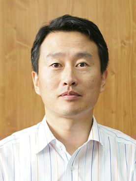

등록일 2017-07-10
[기자수첩] '포항공대' 그 아름다운 이름
[포항=일요신문] 김재원 기자 = POSTECH은 지난 6일 '최고 가치창출대학으로'를 출간했다고 밝혔다. 자기혁신에 대한 의지와 대학의 새로운 시대정신을 담았다고 한다.
1986년 연구의 불모지였던 대한민국에서 국내 처음으로 연구중심대학을 표방하며 도전의 길에 나섰던 POSTECH이 개교 30주년을 맞은 전환점에서 연구중심대학에서 한 걸음 더 나아가 가치창출이란 새로운 지향점을 추가하며 초일류 대학을 향한 새로운 도전에 나서는 출사표이기도 하다는 설명이다.
특히, 가치창출대학은 교육과 연구라는 대학의 전통적인 역할에 더해 적극적으로 사회․경제적 가치를 추구하는 대학이라는 것이다.
즉, 교육에 의한 인재가치, 연구에 의한 지식가치를 창업(創業)과 같은 경제적 가치로 극대화하고 창직(創職)과 사회기여라는 사회적 가치로 확장할 수 있는 정책과 시스템을 갖춘 대학이란 의미이며 여기서 만들어진 가치의 일부가 대학으로 돌아와 교육과 연구의 활성화에 투입되는 선순환 구조를 확립한 대학이라는 것.
또 POSTECH은 가치창출대학으로의 여정에서 두 가지를 강조했다.
하나는 미래 경제적가치의 원천인 기초과학의 가치를 더욱 중요시하고 지원해야 한다는 것이며 또 다른 하나는 가치창출대학의 시대정신을 내재화한 인재들이 우리 미래사회에서 ‘함께 발전’하고 ‘같이 살아’가는 ‘따뜻한 공동체’ 가꾸기에 이바지할 수 있도록 하는 교육을 실현해야 한다는 것이다.
훌륭한 목표고 충분히 도전할 만한 가치로 보인다. 그러나 적지 않은 포항시민들은 먼저 POSTECH이 대학설립 당시 주민과 설립주체였던 포항제철소 임직원들의 바람도 상기해 주기를 원하고 있다. '지역에 바탕을 둔 세계적 대학'이다. 우리나라 첫 노벨상 수상자도 나오길 바랬던 것으로 기억된다.
지방에 이렇다할 대학이 없던 시절, 포항시민과 포철 임직원들은 포항에서 우리나라를 넘어 세계 유수의 명문 대학들과 어깨를 나란히 하는 세계적 대학이 생겨나길 바랬던 것이다.
물론, POSTECH은 이미 그 바람을 넘어 세계적 대학으로 성장했다. 문제는 포항이 없어졌다는 것이다. POSTECH이 포항공과대학교, 아니 포항공대를 의미한다는 것을 아는 시민이 얼마나 될까? 우리 국민들 중에서는 얼마나 될까? 필자는 늘 궁금하다.
학생과 교직원들이야 잘 알겠지만 포항시민 중에서 이를 아는 사람이 많지 않다는 것을 아는 지 모르겠다. 아니 정확하게 말하면 관심조차 없어 보인다.
POSTECH이 어딘지 아세요? 연구소? 벤처회사? 아닙니다. 포항공대입니다. 아~ 포항공대! 그렇게 아는 것이다.
10여년 전 포항공과대학교, 아니 그 아름다운 포항공대라는 이름 대신 갑자기 POSTECH을 사용하기 시작했다. 포항공과대학교 영문자의 앞자들을 모은 것이다.
"이과생들도 있는데 공대라고 해서 학생들의 불만이 적지 않고 세계적 대학답게 세계인이 사용하는 영문자를 이용해 교명을 사용하겠다"는 취지였던 것으로 기억된다.
그렇지만 POSTECH으로 부르면서 포항공대라는 이름 속에 있던 대학의 뿌리와 정체성, 명성도 사라져 대학 홍보면에서도 큰 마이너스였다는 것이 필자의 생각이다.
포항공대라는 이름이 사라지면서 포항공과대학교는 사실상 포항시민이나 상당수 국민들에게도 잊혀지고 있는 것이 아닌가 생각된다.
좋은 가치의 추구, 또다른 목표의 설정 모두 좋다. 그러나 포항시민의 한 사람으로서 바람이 있다면 교명인 포항공과대학교나 설립 때부터 사용해온 약칭 포항공대를 다시 사용해줬으면 좋겠다는 것이다. 그것이 30년을 맞은 포항공과대학교가 앞으로 어떤 가치를 추구할 것인가를 정하기에 앞서 자신들이 어디에 있는지를 아는 또다른 출발점이 되지 않을까하는 마음이다.
ilyodg@ilyo.co.kr

